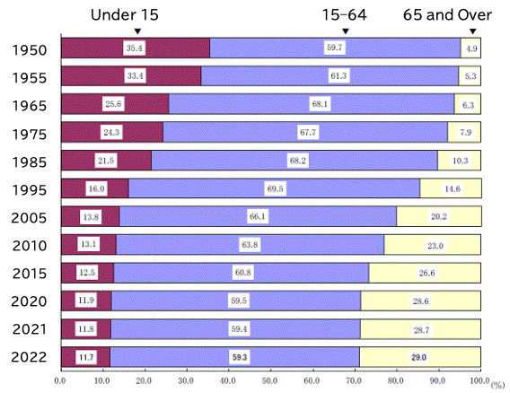
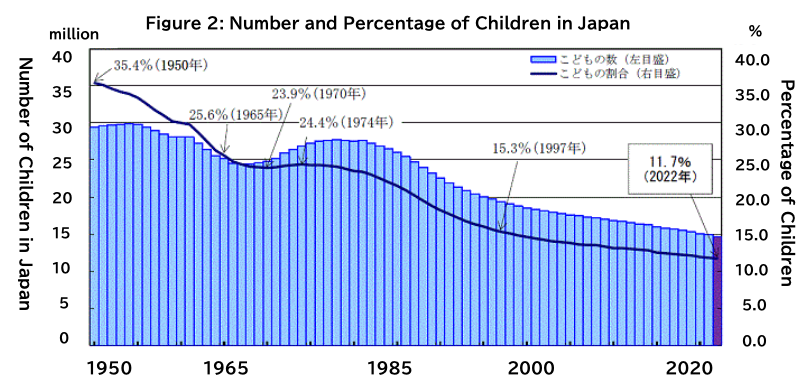
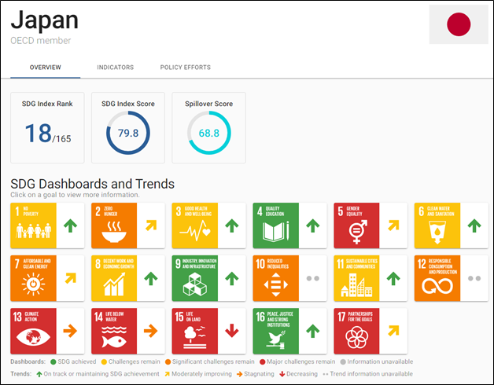
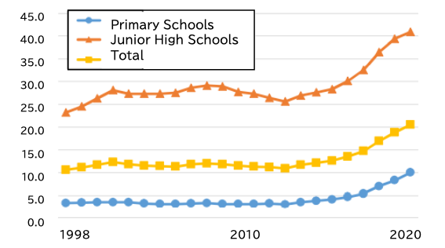

Leave No Child Behind - SDG4: Quality Education for All Children in an Aging Society
05/20 2022
Author: Sachi Ninomiya-Lim

This figure is the lowest among the 35 countries with a population of more than 40 million people, followed by South Korea’s 11.9% and Italy’s 12.9% (UN Demographic Yearbook). While the total population in Japan decreased from its peak at 128 million people in 2008 to 125 million in 2022, the number of children aged under 15 years is now only 14.65 million, less than half that at its peak at 29.89 million in 1954 (Figure 2).

This rapid decrease of young generations is one of the most urgent and serious issues threatening the sustainability of Japanese society. Thus, how can we in Japan overcome this historical demographic shift and sustain our society leaving no one behind?
First, Japan needs to transform its public systems in all areas including social welfare schemes such as pensions, medical and nursing-care programs, the economy and employment structure, immigration policies, city planning, and so on to quickly and appropriately operate society considering the changing composition of the population.
However, the transformation of such systems and schemes does not address the root cause of a declining birth rate. More importantly, we need to transform society and culture as a whole to create an environment that enables more people to have children without fear for the future, and for more children to live happily with confidence to lead the future.
Among the 17 United Nations Sustainable Development Goals (SDGs), Goal 4 "Quality Education" likely contributes much to children’s happiness and confidence. According to the Sustainable Development Report 2021 (Figure 3, Sachs et al. 2021), Japan has already achieved Goal 4 with indicators such as the net primary education enrollment rate and lower secondary completion rate fulfilled by 100%. However, there is another reality behind the scenes.

In Japan, "futoko," which can be translated into different terms in English including school absenteeism, school avoidance, school phobia, and school refusal, has become a serious social issue. In 2020, the percentage of pupils absent for 30 days or more in a year increased to a record high of 1% for elementary and 4% for junior high schools (Figure 4).

Although many such children are left behind without proper support to access any type of appropriate education, they are often counted as "enrolled" and "completed" students when of a certain age, and as such, the actual situation is not reflected in the SDG indicators. While the reasons for and situations of futoko vary among individual cases, this significant increase in number highlights the need for the Japanese school and education system to change. The relatively large number of students per class and per teacher, relatively smaller percentage of governmental expenditure on education, rigid rules forced upon students in schools, lack of alternative educational opportunities out of formal schools, and lack of support for children’s mental health issues are some of the existing problems.
The happiness of children is the basic requisite for the sustainability of society and humanity. We in Japan and the world need to critically understand the real picture and work to create an empowering environment for children to realize a future that leaves no one behind.